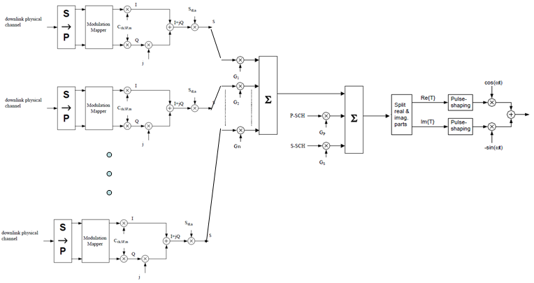
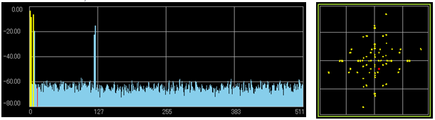
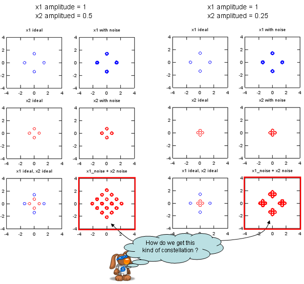
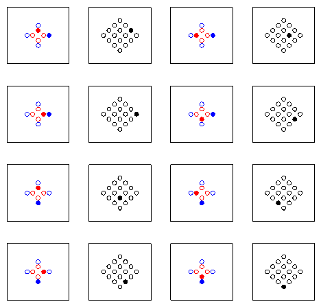

UMTS Quick Reference Go Back To Index Home : www.sharetechnote.com
Constellation (Downlink)- Conceptual
If you combine the following three sections in 25.213, you will have a overall downlink physical channel flow as shown below.
-
5.1 Spreading (Figure 8)
-
5.1.5 Channel combining (Figure 9)
-
5.3.2 Modulation (Figure 11)

Assuming the all the physical channel for data transfer is using QPSK (Release 99), the constellation is shown as below. (Graph on left shows Code Domain Power for each channel and the right side graph shows the constellation).

When I first saw this constellation, I was very confused because it is so much different from my expectation of QPSK constellation.
This kind of complicated constallation comes from the vector summation of multiple QPSK with different amplitudes. If only one channel is transmitted, you would have a normal QPSK constellation as you expected, but if multiple channel (multiple QPSK) are summed, you would get various different patters depending on how many channels are summed and what is the amplitude of each QPSK channel.
Assuming there is just two QPSK channels are being transmitted, I created two example cases with two different amplitude combination as follows.

Following sequence of graph show you how each of the constellation spot at the final result can created from two original QPSK constellation.

